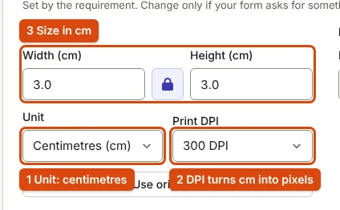

Pixels, cm, DPI and KB: Which Number Is the Form Asking For?
A photo rule can mix pixels, centimetres, DPI and kilobytes. Here is how they relate, with worked examples you can apply to any form.
Three different numbers
A photo requirement on a job portal or application form can contain three kinds of number, and each one is checked differently:
- Pixels (for example 200 × 230 px) are the width and height of the image grid. A portal can read them exactly from the file.
- Centimetres or inches (for example 3.5 × 4.5 cm) describe a printed size. A digital file has no physical size until someone chooses how many pixels go into each inch.
- Kilobytes (for example 20–50 KB) are the storage size of the file. They depend on the pixel count and on how strongly the image is compressed.
DPI (dots per inch) is the link between the first two: it says how many pixels make up one printed inch. Pixels and kilobytes are linked differently, through compression, and no formula converts one into the other.
Converting centimetres to pixels
pixels = centimetres ÷ 2.54 × DPI. For inches, pixels = inches × DPI. The 2.54 is fixed: one inch is exactly 2.54 cm, as the W3C's CSS units also define it.
The DPI must come from the form. When a form gives a physical size it usually states one, and the result changes a lot with it. These worked examples use illustrative requirements of the kind application forms print:
| Requirement | Calculation | Result |
|---|---|---|
| Signature, 6.0 × 2.0 cm at 300 DPI | 6.0 ÷ 2.54 × 300; 2.0 ÷ 2.54 × 300 | 709 × 236 px |
| Photo, 3.5 × 4.5 cm at 200 DPI | 3.5 ÷ 2.54 × 200; 4.5 ÷ 2.54 × 200 | 276 × 354 px |
| Photo, 3.5 × 4.5 cm at 300 DPI | 3.5 ÷ 2.54 × 300; 4.5 ÷ 2.54 × 300 | 413 × 531 px |
| Thumb impression, 240 × 240 px at 200 DPI | 240 ÷ 200 × 2.54 | 3.05 cm per side |
| Handwritten declaration, 800 × 400 px at 200 DPI | 800 ÷ 200 × 2.54; 400 ÷ 200 × 2.54 | 10.2 × 5.1 cm |
The last two rows show the formula working in reverse: when a form gives the pixels and the DPI, the centimetre figures follow from them. Sometimes a form gives both pixels and centimetres with no DPI, and the two do not agree. A photo described as "200 × 230 px (3.5 × 4.5 cm)" works out at 145 DPI across and 130 DPI down. When that happens, the pixel figure is the one a portal can check, so use it.

When the form gives only a printed size
Some rules give centimetres and no DPI, because they describe a paper photo. The Indian passport application instructions, for example, ask for a "recent passport size photograph (4.5 cm length x 3.5 cm width) in colour" to be pasted on a form (Passport Seva instruction booklet). For a print, 300 DPI is the usual choice for sharp results, which gives 413 × 531 px; our passport photo print tool lays out copies at that resolution, and taking a passport-style photo at home covers the photo itself.
If an online form gives centimetres without a DPI and without pixels, keep the shape (the ratio of width to height) and choose a moderate pixel size, for example 350 × 450 px for a 3.5 × 4.5 cm photo. Shape is what decides whether the face is cropped correctly; the exact pixel count then only affects the file size.
Pixels and kilobytes are separate limits
A form that gives both a pixel size and a KB range sets two limits, and meeting one does not meet the other. The same 350 × 450 px photo can be 9 KB or 90 KB depending on compression and content. We measured our test images with the resizer at quality 0.95, the highest it uses:
| Image | Pixels | Pixel count | JPEG at quality 0.95 |
|---|---|---|---|
| Signature | 140 × 60 | 8,400 | 3.1 KB |
| Signature | 300 × 100 | 30,000 | 8.0 KB |
| Portrait | 200 × 230 | 46,000 | 9.1 KB |
| Portrait | 350 × 450 | 157,500 | 26.5 KB |
| Portrait | 600 × 800 | 480,000 | 94.7 KB |
| Portrait | 1200 × 1600 | 1,920,000 | 443.9 KB |
Two things follow. A large photo does not fit a small limit without losing quality, so set the pixel size first; getting a photo under a KB limit without blur shows how much. And a small, simple image can fall below a minimum: the 140 × 60 px signature is 3.1 KB, well under a 10 KB minimum, so the resizer pads it without changing the picture.
Does the DPI tag inside the file matter?
For an online upload, rarely. A JPEG can carry a DPI value in its header, but changing it does not change the pixels or the picture, and the file size stays almost the same. A check on "dimensions" reads the pixel width and height. Where a form says "scan at 200 DPI", it is telling you how to capture enough detail from the paper, not which tag to write into the file.
Common mistakes
- Dividing by 2.5 or 10. There are 2.54 cm in an inch.
- Swapping width and height. Forms often write the height first, as in "4.5 × 3.5 cm", for a photo that is taller than it is wide. Check which number is the height before you crop; a portrait photo is always taller than wide.
- Stretching to fit. If the crop has a different shape from the target, the face is squashed. Crop to the target shape first; the resizer's frame does this.
- Treating a DPI change as a resize. Changing 72 DPI to 300 DPI in an editor without resampling leaves the same pixels.
- Saving the result as PNG. A PNG of the right pixel size can still be several times over the KB limit; see JPEG, PNG or WebP.
When you have the pixel size and the KB limit, the resize to a KB limit page and the resizer do both steps at once.
Frequently asked questions
A form asks for 200 × 230 pixels. What is that in centimetres?
It depends on the DPI: about 2.5 × 2.9 cm at 200 DPI, or 1.7 × 1.9 cm at 300 DPI. When a form gives pixels, use the pixels.
Does lowering the DPI make the file smaller?
Not on its own. Only fewer pixels or stronger compression make it smaller.
What is the difference between DPI and PPI?
PPI (pixels per inch) describes image or screen density; DPI (dots per inch) describes a printer. Forms use DPI for both, and so does this page.
Sources
- W3C: CSS Values and Units Module Level 3, absolute lengths (1 in = 2.54 cm)
- MDN Web Docs: Image file type and format guide
- Ministry of External Affairs: Instructions for filling the passport application form, photograph dos and don'ts
Figures on this page were measured with ApplyReady's own tools in a current browser. Found a mistake? Report an error.